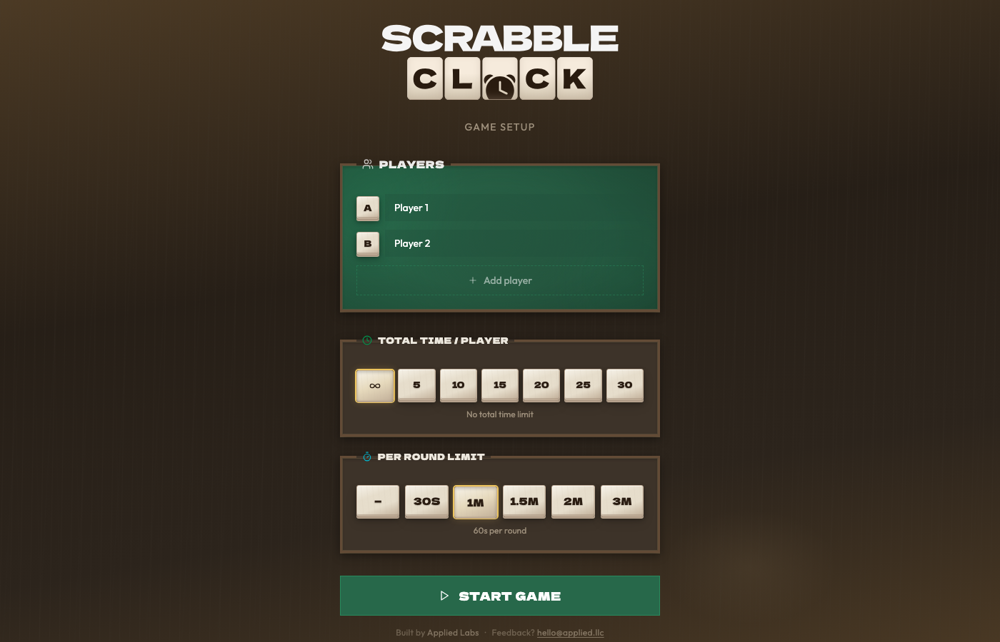
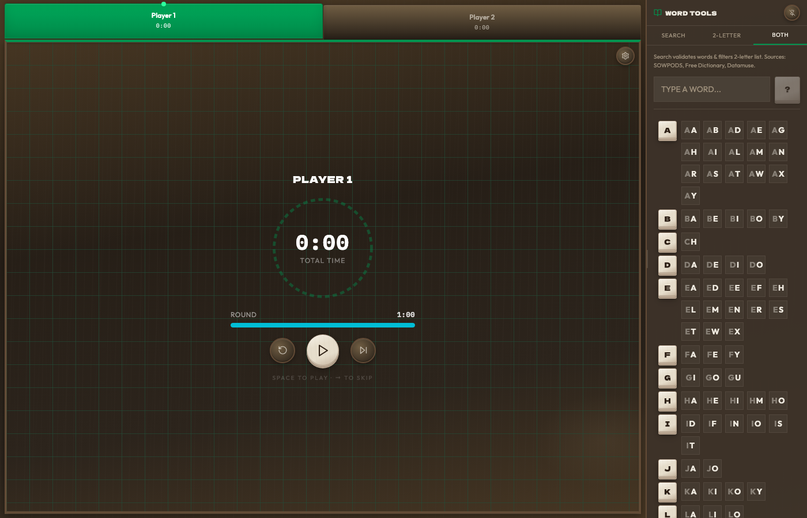

A chess-clock-style timer for physical Scrabble. Built-in word checker means one less thing on the table.
Physical Scrabble games have no built-in clock. Players use phone timers that can't track per-player time, and disputed words mean stopping to look up a dictionary. The result is slower games, more arguments, and a phone in everyone's hand at the table.
Configure 2–6 players with a total time budget per player and an optional per-round shot clock. One tap passes the clock. Time pressure is visible at a glance.
Type any word to validate it instantly against SOWPODS via the Free Dictionary API and Datamuse fallback. No separate dictionary app needed mid-game.
A browsable SOWPODS 2-letter word panel sits alongside the timer, filterable by starting letter — the reference sheet serious players always want nearby.


Free, no account needed